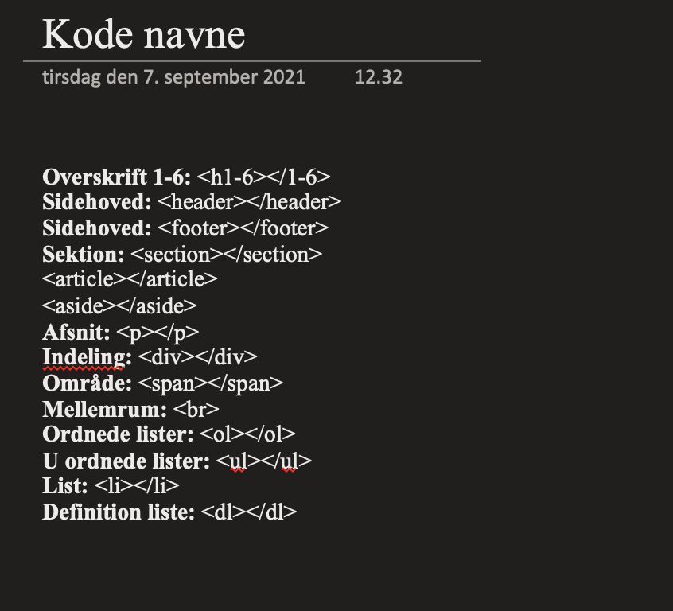
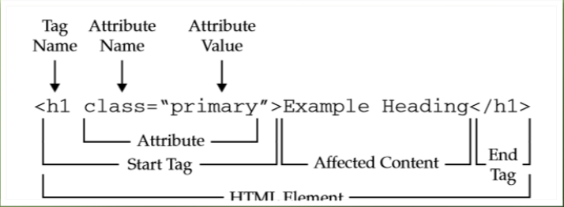

Opfinderen af WWW (World Wide Web) er Tim Berners-Lee. Han besluttede sig så for at det skulle deles for alle. Det er hele grunden til at alle kan se koden bag en hjemmeside, hvis man højreklikker på sitet.
HTML (HyperText Markup Language) er indholdet på en hjemmeside. Altså det er i HTML'en man skriver teksten og billedet ind. Før i tiden var der kun HTML så man kunne kun have tekst og billeder uden man som sådan kunne designe websitet.
Det er vigtigt når man koder at man har SEO (søgemaskineoptimering) i tankerne hvis man for eksempel laver flere end 1 h1'er. Vil google ranke ens hjemmeside lavere end andre hjemmesider med en h1'er.
Der findes 6 forskellige overskriver:
h1 - h2 - h3 - h4 - h5 - h6
1 er den største overskrift og helst den du vil have i fokus. Det er bedst det er i rækkefølge i koden. Man ser helst ikke man bruger nogle h1-6'ere flere gange.
Der er også andre måder man kan optimere SEO på. sections får højere score i SEO end divisions. Så man vil helst bruge flere sections end divisions. Jeg plejer at have huskereglen med at man som regel kun bruger divison som pagewrap. Så sections er altid inde i en div.
Editor:
En editor er et program som arbejder med tekst. Det er programmet med koder i. Det er et tekstbehandlingsprogram som Word tilføjer formatering som margener, font, fontstørrelse osv.
Inde i et hvert tag name kan man skrive en attribute. attributen kan være en class som vist på billedet. En class er en række tags som skal have det samme design i CSS'en. Hvis man kun vil have en specifik til skal man bruge id som attribute name. Attribute value er hvad man skal kalde den, såsom brødtekst eller andet. Men det vigtigt man passer på at man ikke bruger æøå i koden da din browser ikke kan læse det.
Hvis du vil lave et link skal man bruge a tagget, altså et hyperlink. så du skal skrive en attribute inde i a'et så du skriver href="link".
En god ting og gøre når man designer sin hjemmeside er og tegne de forskellige sections, altså hvad der er inde i hvad.